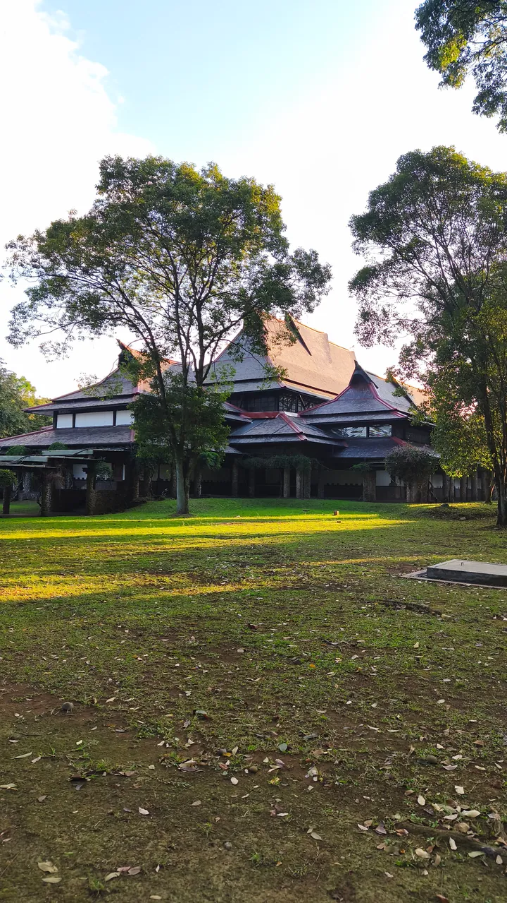

ITB · Kampus Ganesha
Rencana aktivitas
Periksa prakiraan sebelum beraktivitas.
Aula Barat · Kampus Ganesha · Foto dokumentasi, bukan kondisi cuaca langsung

Untuk cuaca ekstrem, ikuti peringatan resmi BMKG. Indeks aktivitas bukan peringatan bahaya. Peluang hujan bukan intensitas.
Planner
Cek jam terbaik
Pilih jam
Cek sebelum berangkat.
Pilih aktivitas dan jam. Sistem akan pakai peluang hujan, risiko, dan panas terasa.
Timeline
Timeline hari ini
Sabtu, 21 November 2026
Garis terputus: data tidak tersedia. Angka lengkap ada di rincian per jam.
Aktivitas
Saran aktivitas
Berkendara
Bawa jas hujan
Hindari berkendara sekitar pukul 15:00.
Jalan kaki
Bawa payung
Antisipasi tempat berteduh di sekitar pukul 15:00.
Menjemur
Periksa jam
Pilih periode peluang hujan lebih rendah jika tersedia.
Luar ruang
Siapkan cadangan
Gunakan opsi ruangan tertutup.
Olahraga
Sesuaikan waktu
Pilih jam alternatif: 02:00–10:00, 18:00–23:00.
Fotografi
Lindungi peralatan
Lindungi peralatan elektronik dari kelembapan.